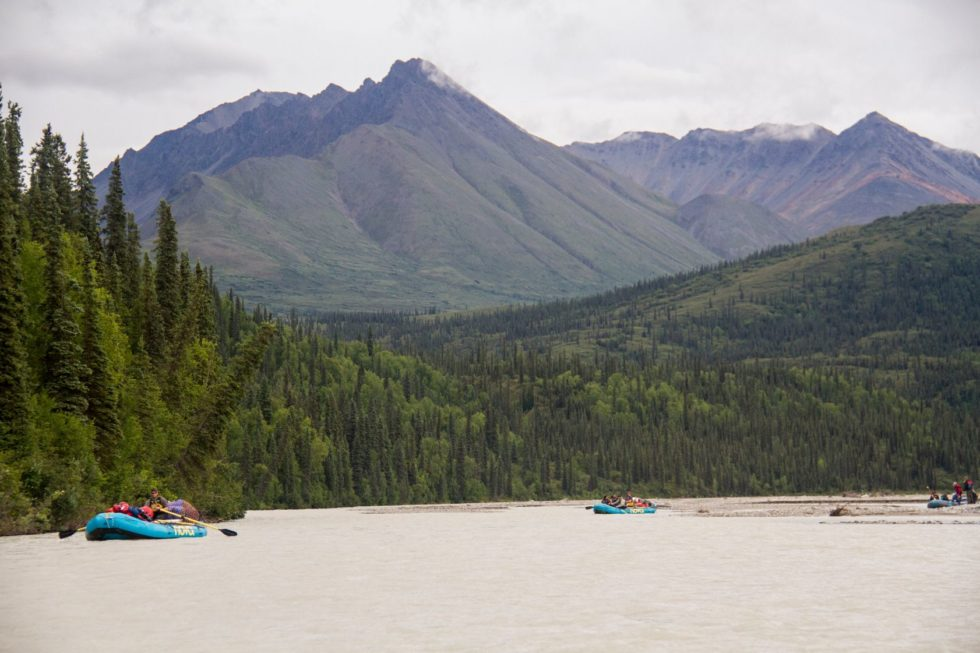
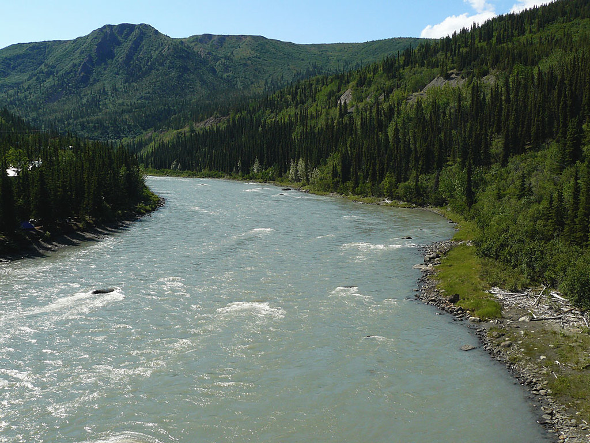
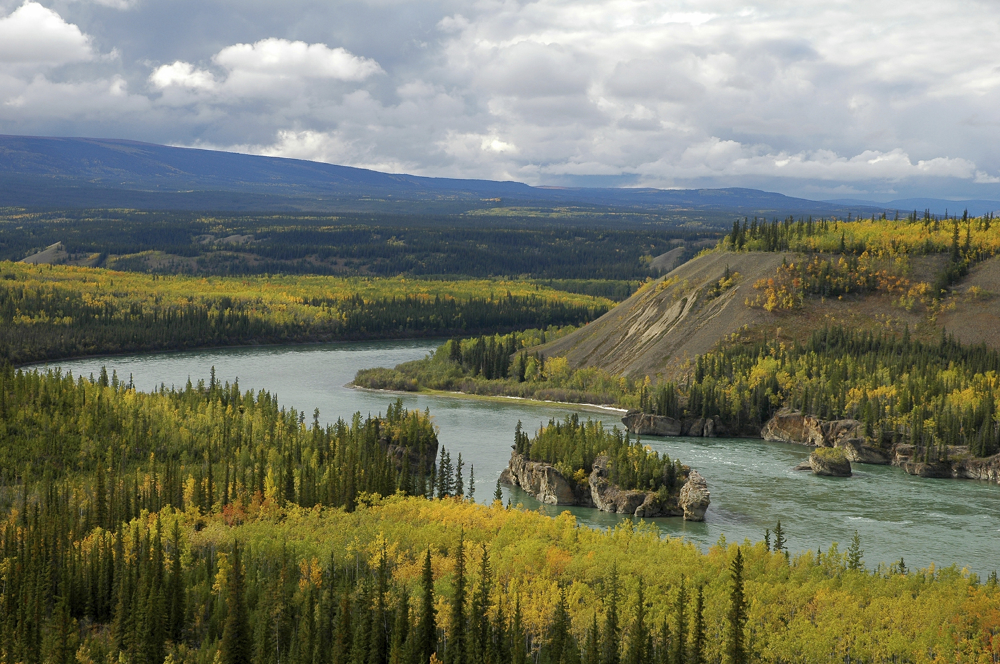

Talkeetna River
The Talkeetna River is, according to almost every guidebook or reference you may consult, the most classic, wilderness, whitewater trip in Alaska. Its remote location, steep, fast-water canyon, abundant fishing and wildlife viewing make it one of the true classics for sure. It requires a bush plane to fly into the Talkeetna Mountains where there are huge views of the highest peak in North America, Denali, and in the headwaters area there is good hiking. Its only disadvantage is its popularity, especially on its lower reaches where jet boats bring fishermen far upstream during the peak King Salmon run. Its whitewater canyon is a very continuous Class IV to V stretch and one outfitter calls the canyon "the longest rapid in Alaska", even though there are some breaks but precious few scouting locations or recovery eddies. It has gradient anywhere from 60 to 20 feet per mile and during the big salmon run can be swarming with bears. It is a cold, swift glacial river at all times with a beautiful turquoise color to it. The normal trip is 60 miles in length and is sometimes done in as few as 3 to 4 days but a much more enjoyable pace is 5 to 7 days and is suitable for medium to large rafts or kayaks.
Nenana River
The Nenana River, a glacial river, forms the eastern boundary of Denali National Park and is possibly the most popular river rafting destination in the state. It offers a variety of levels of difficulty and has a thriving commercial rafting industry that operates 2 hour, 4 hour and overnight trips for locals as well as out of state tourists. It is also a favorite whitewater kayaking destination for boaters throughout the state and has an annual Nenana Wildwater and Slalom Race each Fourth of July. The Nenana River Gorge has 10 miles of solid Class IV whitewater within a steep-walled canyon that is home to wild sheep and nesting golden eagles, while it's headwaters are a beautiful wilderness area full of moose, bear, wolves and caribou, all within the setting of the rugged Alaska Range Mountains. It flows through an area within the 62 to 63 degree north latitude range. Usually fairly predictable, flooder waters during the fall of 2012 filled the river with 2-3 times its normal amount of water. One group of whitewater guides actually rafted the Nenana at its peak flood stage after days of scouting and extensive safety planning.
Yukon River
The Yukon River is such a giant; no words can accurately describe the scale of things along its more than 2000-mile length. There are sloughs running through large wooded islands that are bigger than most rivers, and if you need to be on one side of the river at a certain point, you better start many miles in advance getting to that side. Running out of the Canadian subarctic and across the entire breadth of Alaska to where its gigantic delta meets the Bering Sea, the Yukon would take a lifetime of exploring to learn a fraction of its lessons. It has been carrying water all through the last ice age as part of the ice-free corridor that may have linked the subarctic regions with the southern latitudes and has been home to the Athabaskan Native groups for eons. There is a stigma to floating the Yukon that is unlike most other river journeys and it is a big undertaking but is generally a mild river with a few rapids in the Canadian section and strong eddy lines at every turn. Strong winds can create 3-foot waves and getting stopped is never an easy task.